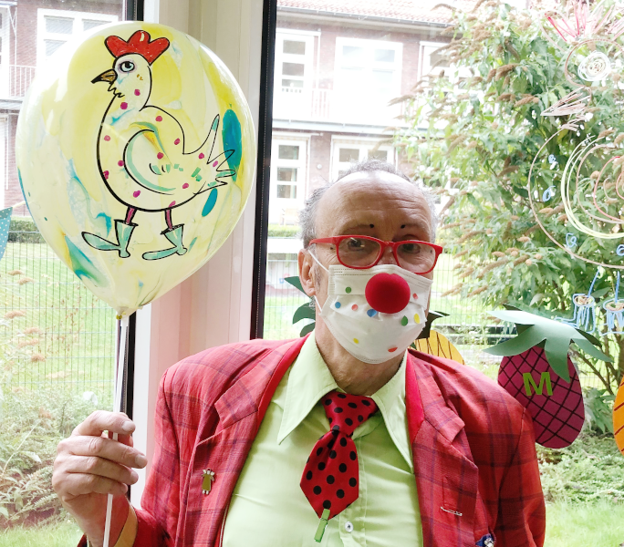

Herzlich willkommen!
Schön, dass Sie auf meiner Seite gelandet sind! Hier finden Sie Informationen zu meiner Arbeit als Clown und etwas über mich persönlich.
Meistens bin ich als Klinik-Clown in verschiedensten Einrichtungen unterwegs: Kinderkliniken, Altenheime und psychiatrische Einrichtungen, vornehmlich in Nordrhein-Westfalen, werden von mir allein oder zusammen mit meinen Partnern besucht.
In der Kinderklinik

Der Clown in der Kinderklinik hat eine ganz besondere Rolle: er gehört weder zur Familie, noch zum Pflegepersonal. Als Clown bin ich Verbündeter und Freund der Kinder. Der Clown klopft an: “Darf ich reinkommen?”, meistens dürfen wir. Was dann kommt, wissen wir vorher auch nicht. Es wird kein festes Programm gespielt, wir lassen uns selber überraschen, was passiert.
Im Altenheim
Seit 2003 besuche ich regelmäßig Altenheime. Zuerst habe ich gedacht, was soll da groß anders sein? Aber dann wurde schnell klar, dass der Kontakt mit alten Menschen eine ganz andere Einstellung erfordert. Das Spiel ist meistens ruhiger, einfühlsamer und manchmal auch ganz still. Aber es wird auch getanzt und viel gelacht.
In der Psychiatrie
Seit etlichen Jahren besuche ich mit meinen Clownskolleginnen Luzi & Motte ältere Menschen in der LWL-Klinik in Münster. Es macht uns allen total viel Spaß und wir freuen uns, einmal im Monat dort zu sein.
Als Ballonmaler
Früher habe ich Comics gezeichnet, heute zeichne ich als Clown Geschichten oder Lieblingstiere auf Luftballons. Egal ob Kinder oder Verwachsene, jeder bekommt seinen Ballon, wenn er will. Über das Zeichnen auf dem Ballon kann ich gut mit den Kindern oder Erwachsenen in Kontakt kommen, Geschichten erzählen und ein schönes Andenken zurücklassen.